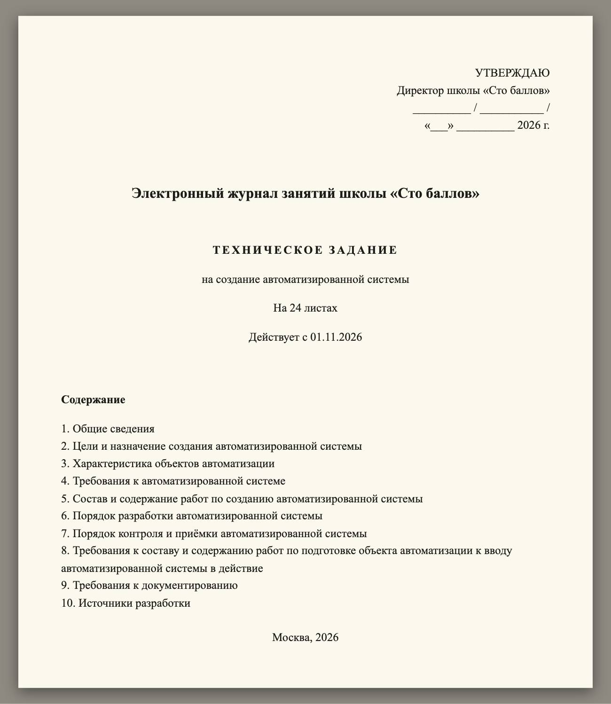
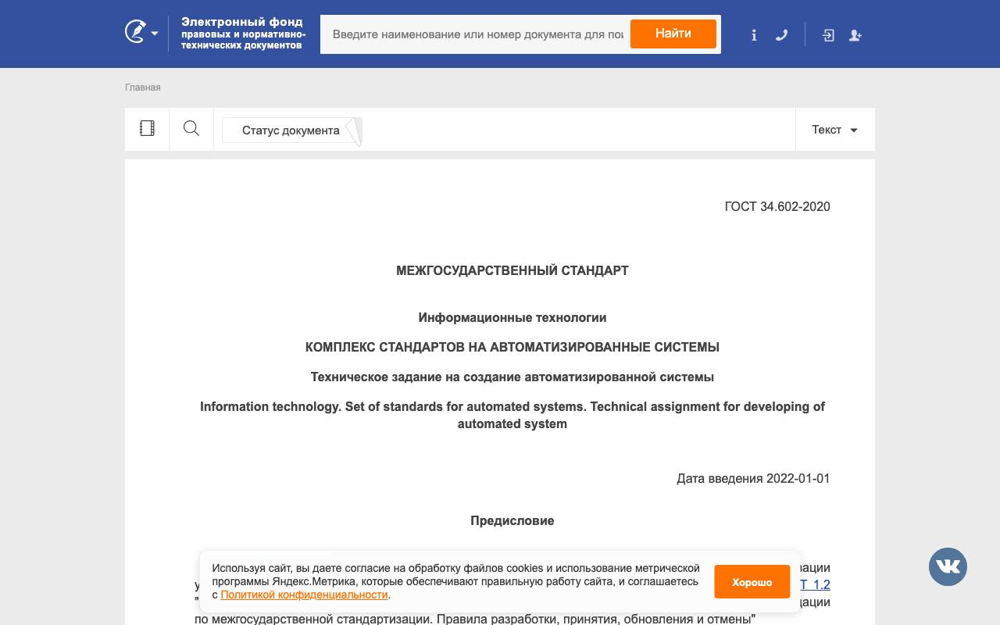

Справочник «Стандарты и сертификаты» · тема 3
Глава 2
ГОСТ 34 и ГОСТ 19:
документы на систему и программу
Государственные и крупные заказчики требуют техническое задание и документацию по ГОСТ. В главе разобраны два комплекса стандартов: ГОСТ 34 на автоматизированные системы и ГОСТ 19 на программы, — состав технического задания по ГОСТ 34.602-2020 и стадии создания системы.
- Документы
- ГОСТ 34.602-2020 · ГОСТ Р 59793-2021 · ГОСТ Р 59795-2021 · ГОСТ 19.101-77, 19.201-78, 19.301-79, 19.402-78, 19.505-79
- Уровень
- Средний
- Где встречается
- Госзаказ, внедрение корпоративных систем, регистрация программ
- Зачем это знать
- Чтобы составить и принять техническое задание по стандарту
§1Два комплекса стандартов
Автоматизированная система в терминах ГОСТ 34 — это программы вместе с оборудованием, людьми и правилами их работы. Электронный журнал школы — система: в неё входят сервер, программа, учителя и порядок выставления оценок.
Комплекс ГОСТ 34 описывает, как создавать такую систему и какими документами это оформлять. Комплекс ГОСТ 19, или Единая система программной документации (ЕСПД), описывает документы на саму программу.
| Комплекс | Объект | Основные документы |
|---|---|---|
| ГОСТ 34 | автоматизированная система целиком | техническое задание, проектные решения, программа и методика испытаний, акты |
| ГОСТ 19, ЕСПД | программа | техническое задание на программу, описание программы, руководство оператора |
§2Техническое задание по ГОСТ 34.602-2020
ГОСТ 34.602-2020 действует с 1 января 2022 года и заменил редакцию 1989 года. Он устанавливает десять обязательных разделов технического задания на автоматизированную систему.

Если по какому-то разделу требований нет, раздел не убирают: в нём пишут, что требования не предъявляются. Так заказчик видит, что вопрос рассмотрен.

§3Стадии создания системы
Стадии создания автоматизированной системы задаёт ГОСТ Р 59793-2021. На каждой стадии появляется свой документ, и следующая стадия опирается на предыдущую.
| Стадия | Что на ней делают | Результат |
|---|---|---|
| Формирование требований | обследуют объект, собирают требования пользователей | отчёт, заявка на разработку |
| Разработка концепции | сравнивают варианты построения системы | концепция |
| Техническое задание | записывают требования и порядок приёмки | утверждённое техническое задание |
| Эскизный проект | принимают предварительные решения | эскизный проект |
| Технический проект | принимают окончательные решения по системе и её частям | технический проект |
| Рабочая документация | пишут программы и эксплуатационные документы | программы, инструкции |
| Ввод в действие | проводят испытания, обучают персонал | акты испытаний и приёмки |
| Сопровождение | устраняют недостатки, выполняют гарантийные работы | записи о выполненных работах |
Состав и содержание документов на систему описывает ГОСТ Р 59795-2021.
§4Документы на программу по ГОСТ 19
Стандарты ЕСПД приняты в конце 1970-х годов и действуют до сих пор. Их требуют при сдаче программ государственным заказчикам.
| Стандарт | Документ | Что в нём |
|---|---|---|
| ГОСТ 19.101-77 | виды программ и программных документов | перечень документов и их обозначения |
| ГОСТ 19.201-78 | техническое задание на программу | назначение, требования, стадии, порядок приёмки |
| ГОСТ 19.301-79 | программа и методика испытаний | что проверяют, в каком порядке и чем |
| ГОСТ 19.402-78 | описание программы | функции, логическая структура, входные и выходные данные |
| ГОСТ 19.505-79 | руководство оператора | как запустить программу и работать с ней, сообщения оператору |
§5Разбор: школа заказывает электронный журнал
- Оба стандарта стали условиями договора
- При приёмке школа сверяет разделы и состав документов со стандартом
- Отсутствие программы и методики испытаний считается недостатком работы
- Составить техническое задание из десяти разделов и утвердить его до начала работ
- В разделах без требований оставить запись об их отсутствии
- Согласовать с заказчиком перечень документов к сдаче
§6Частые ошибки
§7Проверьте себя
- Чем автоматизированная система отличается от программы в терминах ГОСТ 34?
- Назовите десять обязательных разделов технического задания по ГОСТ 34.602-2020.
- Что делают с разделом, по которому требований нет?
- Какой стандарт задаёт стадии создания системы? Назовите стадии по порядку.
- Какие документы на программу описывают стандарты ГОСТ 19.301, 19.402 и 19.505?
34.602-2020 — ТЗ, 10 разделовР 59793-2021 — стадииР 59795-2021 — документы19.201 — ТЗ на программу19.301 — испытания19.402 — описание19.505 — руководство операторараздел без требований не убираютгод стандарта указыватьТЗ утверждают до работСправочник «Стандарты и сертификаты» · глава 2Макаров Максим Николаевич